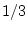
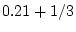
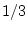
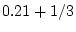
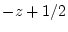
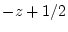

We assume that WIEN2k is properly installed and configured for your site and that you ran userconfig_lapw to adjust your path and environment. (For a detailed description of the installation see chapter 11.
This chapter is intended to guide the novice user in the handling of the program package. We will use the example of TiC in the sodium chloride structure to show which steps are necessary to initialize a calculation and run a self consistent field cycle. We also demonstrate how to calculate various physical properties from these SCF data. Along the way we will give all important information in a very abridged form, so that the novice user is not flooded with information, and the experienced user will be directed to more complete information.
In this chapter we will also show, how the new graphical user interface w2web can be utilized to setup and run the calculations.
Before we begin with our introductory example, we describe the naming conventions, to which we will adhere throughout this user's guide.
On UNIX systems the files are specified by case.type and it is required that all files reside in a subdirectory ./case. Here and in the following sections and in the shell scripts which run the package themselves, we follow a simple, systematic convention for file labeling.
For the general discussion (when no specific crystal is involved), we use case, while for a specific case, e.g. TiC, we use the following notation:
case=TiC
The filetype ``type'' always describes the content of the file (e.g.,
type=inm is inPUT for mIXER).
Thus the input to MIXER for TiC is found in the file
TiC.inmwhich should be in subdirectory ./TiC.
Start the user interface w2web on the computer where you want to execute WIEN2k(you may have to telnet, ssh,.. to this machine) with the command
w2web [-p xxxx]
If the default port (7890) used to serve the interface is already in use by some other process, you will get the error message w2web failed to bind port 7890 - port already in use!. Then you will have to choose a different port number (between 1024 and 65536) . Please remember this port number, you need it when connecting to the w2web server.
Note: Only user root can specify port numbers below 1024!
At the first startup of this server, you will also be asked to setup a username and password, which is required to connect to this server.
Use your favorite WWW-browser to connect to w2web, specifying the correct portnumber, e.g.
netscape http://hostname_where_w2web_runs:7890
(If you do not remember the portnumber, you can find it by using
``ps -ef  grep w2web'' on the computer where w2web is running.)
You should see a screen as in Fig.3.2.
grep w2web'' on the computer where w2web is running.)
You should see a screen as in Fig.3.2.
The user interface w2web uses sessions to distinguish
between different working environments and to quickly change between
different calculations. First you have to create a new session (or select an
old one). Enter ``TiC'' and click the ``Create'' button.
Note: Creating a session does not automatically
create a new directory!
You will be placed in your home directory if no working directory was designated to this session previously (or if the directory does not exist any more).
Using ``Session Mgmt.  change
directory'' you can select an existing directory or create a new one.
For this example create a new directory lapw and than TiC
using the
``Create'' button. After the directory has been created,
you have to click on select current directory
to assign this newly created directory to the current session.
change
directory'' you can select an existing directory or create a new one.
For this example create a new directory lapw and than TiC
using the
``Create'' button. After the directory has been created,
you have to click on select current directory
to assign this newly created directory to the current session.
After clicking on Click to restart session the main window of w2web will appear (Fig.3.3.
To create the file TiC.struct start the struct-file generator using
``Execution  StructGen
StructGen
 '' (see figure 3.4).
'' (see figure 3.4).
For a new case w2web creates an empty structure template in which you can specify structural data. Later on this information is used to generate the TiC.struct file.
As a first step specify the number of atoms (2 for TiC) and fill in the data given below into the corresponding fields (white boxes):
| Title | TiC |
| Lattice | F (for face centered) |
| a | 4.328 Å(make sure the Ang button is selected) |
| b | 4.328 Å |
| c | 4.328 Å |
|
|
90 |
| Atom | Ti, enter position (0,0,0) |
| Atom | C, enter position (.5,.5,.5) |
Click ``Save Structure'' (Z will be updated automatically) and ``set automatically RMT and continue editing '':
This will compute the nearest neigbor distances using the program nn and setrmt_lapw will then determine the optimal RMT values (muffin-tin radius, atomic sphere radius). To learn more about the philosophy of setting RMTs see . Since it is essential to keep RMTs constant within a series of calculations (eg. when you do a Volume-optimization, see 3.11.6 ), you should already now decide whether you want to do just one single calculation with fixed structural parameters, or whether you intend a relaxation of internal parameters (using forces and min_lapw) or a volume optimization, which would required reduced RMT values.
Choose a reduction of 3 % so that we can later optimize the lattice parameter.
When you are done, exit the StructGen
 with ``save file and
clean up''. This will generate the file TiC.struct (shown now in view-only mode with a different background color), which is
the master input file for all subsequent programs. This step also
automatically generates the input file for the free atom program
lstart (atomic configurations) tic.inst.
with ``save file and
clean up''. This will generate the file TiC.struct (shown now in view-only mode with a different background color), which is
the master input file for all subsequent programs. This step also
automatically generates the input file for the free atom program
lstart (atomic configurations) tic.inst.
A few other hints on StructGen
 :
:
You have to click on Save Structure after every modifications you make in the white fields. Add/remove a position/atom only if you have made no other changes before.
In a face-centered (body-centered) spacegroup you have to enter just one atom (not the ones in (.5,.5,0),...).
StructGen
 offers a built in calculator: Each position of
equivalent atoms can be entered as a number, a fraction (e.g. )
or a simple expression (e.g. ). The first position defines
the variables x, y and z, which can be using in expression defining
the other positions (e.g.
offers a built in calculator: Each position of
equivalent atoms can be entered as a number, a fraction (e.g. )
or a simple expression (e.g. ). The first position defines
the variables x, y and z, which can be using in expression defining
the other positions (e.g.  ,
,  , ).
, ).
When you now choose ``Files  show all
files'', you will see, that both files tic.struct and
tic.inst have been created.
show all
files'', you will see, that both files tic.struct and
tic.inst have been created.
For a detailed description of these files consult sections 4.3 and 6.4.3.
After the two basic input files have been created, initalization of
the calculation is done by ``Execution  initialize
calc.''. This will guide you through the steps necessary to
initialite the calculation. Simply follow the steps that are
highlighted in green and follow the instructions.
initialize
calc.''. This will guide you through the steps necessary to
initialite the calculation. Simply follow the steps that are
highlighted in green and follow the instructions.
The initialization process is described in detail in section 5.1.2.
Alternatively you could run the script init_lapw from the command line.
All actions of this script are logged in short in :log and in
detail in the file case.dayfile, which
can easily be accessed by Utils.  show dayfile.
show dayfile.
Initializing the calculation will run several steps automatically, where x is the script to start WIEN2k programs (see section: 5.1.1).
Initialization of a
calculation (running init_lapw) will create all inputs for the
subsequent SCF calculation choosing some default options and values. You can
find a list of input files using ``Files  input files'' (
3.5).
input files'' (
3.5).
After the case has been set up, a link to ``run SCF'' is added,
(``Run Programs  run SCF'' and you should invoke the
self-consistency cycle (SCF). This runs the script
run_lapw with the desired options.
run SCF'' and you should invoke the
self-consistency cycle (SCF). This runs the script
run_lapw with the desired options.
The SCF cycle consists of the following steps:
After selecting ``run SCF'' from the ``Execution'' menu, the SCF-window will open, and you can now specify additional parameters. For this example we select charge convergence to 0.0001: Specify ``charge'' to be used as convergence criterion, and select a value of 0.0001 (-cc 0.0001).
To run the SCF cycle, click on ``Run!''
Since this might take a long time for larger systems; you can specify the ``Execution type'' to be batch or submit (if your system is configured with a queuing system and w2web has been properly set up, see section 11.3).
While the calculation is running (as indicated by the status frame in the top right corner of the window), you can monitor several quantities (see section 3.9).
Once the calculation is finished (11 iterations), view case.dayfile for timing and errors and compare your results with the files in the provided example (TiC/case_scf).
For magnetic systems you would run a spin-polarized calculation with the script runsp_lapw. The program flow of such a calculation is described in section 4.5.2 and the script itself in section 5.1.3.
During the SCF cycle the essential data of each iteration are appended to the file case.scf, in our example TiC.scf. For an easier retrieval of certain quantities, the essential lines carry a label of the form :LABEL: which can be used to monitor these quantities during a SCF run.
The information is retrieved using the UNIX grep command or using the
``Utils.  analyze'' menu.
analyze'' menu.
While the SCF cycle of TiC is running try to monitor e.g. the total energy (label :ENE) or the charge distance (label :DIS). The calculation has converged, when the convergence criterion is met for three subsequent iterations (compare the charge distance in the example).
For a detailed description of the various labels consult section 4.4.
Save the result to this example under the name ``TiC_scf''.
You can now improve your calculation and check the convergence of the most important parameters:
Once the SCF cycle has converged one can calculate various properties like Density of States (DOS), band structure, Optical properties or X-ray spectra.
For the calculation of properties (which from now on will be called ``Tasks''). We strongly encourage the user to utilize the user interface, w2web. This user interface automatically supplies input file templates and shows how to calculate the named properties on a step by step basis.
Select ``El. Dens.'' from the ``Tasks'' menu and click on the buttons one by one (see figure 3.6):
-1 -1 0 4 # origin of plot (x,y,z,denominator) -1 3 0 4 # x-end of plot 3 -1 0 4 # y-end of plot 3 2 3 # x,y,z number of shells 100 100 # x, y plotting mesh, choose ratio similar to x,y length RHO ANG VAL NODEBUG ORTHO
For a detailed description of input options consult section 8.6.3
Compare the result with the electron density plotted in the (100) plane (see figure 3.7). The program gnuplot (public domain) must be installed on your computer. For more advanced graphics use your favorite plotting package or specify other options in gnuplot (see rhoplot_lapw how gnuplot is called).
TiC
-0.50 0.00200 1.500 0.003 EMIN, DE, EMAX, Gauss-broadening
6 NUMBER OF DOS-CASES
0 1 tot (atom,case,description)
1 4 Ti d
1 5 Ti eg
1 6 Ti t2g
2 2 C s
2 3 C p
For a detailed description of input options consult section 8.1.3
If you want to use the supplied plotting interface dosplot to preview the results, the program gnuplot (public domain) must be installed on your computer.
The calculated DOS can be compared with figures 3.8 to 3.13 if you select a range of -12.5 to 3.5 eV. To calculate DOS for higher energies, you will have to increase EMAX in case.in1 and rerun x lapw1.
Select ``X-Ray Spectra'' from the ``Tasks menu'' and click on the buttons one by one:
If you want to use the supplied plotting interface specplot
to preview the results, the public domain program gnuplot
must be installed on your computer. The calculated TiC
Ti- -spectrum can be compared with figure
3.14.
-spectrum can be compared with figure
3.14.
Select ``Bandstructure'' from the ``Tasks'' menu and click on the buttons one by one:
If you want to preview the bandstructure, the program ghostview (public domain) must be installed on your computer. You can compare your calculated bandstructure with figure 3.15.
If you have case.irrep* or case.qtl* files from previous runs which do not fit to the present case.output1 file, you may get errors while running spaghetti. In this case remove all case.irrep or case.qtl files.
You can compare your results with figure 3.16.
Select ``Optimize (V,c/a)'' from the ``Execution'' menu. Setup the shell script optimize.job script using x optimize and volume variations of -10, -5, 0, +5 and +10%. Edit this file and uncomment the x dstart line (remove the ``#'' character). Then run the optimize.job. When the job has finished, you should click on Plot and then preview the energy curve.
You should get an energy curve as in figure 3.17. On the screen you will find the fitting parameters for the ``equation of states'' (Murnaghan, Birch-Murnaghan and the EOS2 equation, see sec. 9.9). This information is also written to TiC.outputeos.
Usually this information can be collected from the ``International Tables of Crystallography'' once you know the space group, the Wyckoff position and the internal free coordinates.
Usually for a new ``case`` the input is not created from scratch, but one uses the struct file from a similar case as pattern. Change into the lapw subdirectory and proceed as follows:
mkdir case_new
cd case_new
cp ../case_old/case_old.struct case_new.struct
Now edit case_new.struct (see section 4.3) as necessary (Note: this is a fixed formatted file, so all values must remain at their proper columns). Afterwards generate case_new.inst using instgen_lapw.
Use the menu Session Mgmt.  change
session of
w2web to create a new session (enter the name of the
new session and click on ``Create'').
Then you should also create a new directory and ``select'' it..
change
session of
w2web to create a new session (enter the name of the
new session and click on ``Create'').
Then you should also create a new directory and ``select'' it..
When you select ``Execution  StructGen
StructGen
 '', you have two choices:
you can select a ``cif'' file (or download it from some other location)
and convert this file to the WIEN2k case.struct file. Alternatively you
just specify the number of non-equivalent atoms and a
template file will be copied to case.struct. To create the new
case using the StructGen
'', you have two choices:
you can select a ``cif'' file (or download it from some other location)
and convert this file to the WIEN2k case.struct file. Alternatively you
just specify the number of non-equivalent atoms and a
template file will be copied to case.struct. To create the new
case using the StructGen
 you simply specify the lattice (type or
spacegroup), cell parameters and
name and positions of atoms. When you ``save file and clean up'' the new case.struct
file and the case.inst file are created automatically.
you simply specify the lattice (type or
spacegroup), cell parameters and
name and positions of atoms. When you ``save file and clean up'' the new case.struct
file and the case.inst file are created automatically.
For more information on the StructGen
 refer to page
refer to page
![[*]](crossref.png) .
.